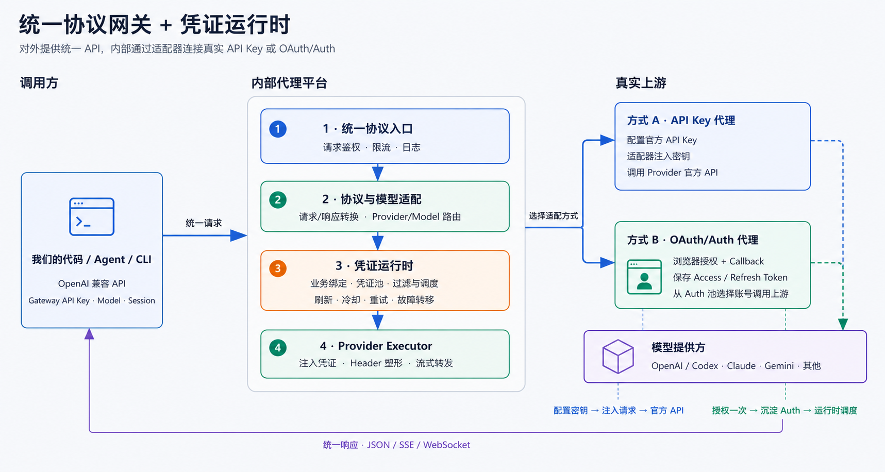

方式 A
API Key 代理
适配器把统一请求转换为 Provider 协议，并从安全配置中读取真实 API Key，注入对应 Header 后调用官方 API。
统一请求→协议适配→注入 Key→官方 API
CLIProxyAPI · Architecture Review
通过协议与 Provider 适配器，将调用方使用的统一 API，转换并路由到后台真实的 API Key 或 OAuth/Auth 凭证，完成上游模型调用，再把响应转换回调用方协议。

01 · Two Proxy Modes
调用方始终请求代理平台。差异发生在平台内部：一种注入配置好的 API Key，另一种先通过浏览器授权沉淀 Auth，再从 Auth 池选择账号。
方式 A
适配器把统一请求转换为 Provider 协议，并从安全配置中读取真实 API Key，注入对应 Header 后调用官方 API。
方式 B
用户只在接入阶段通过浏览器授权。Callback 换取并保存 Token，运行时再从允许的 Auth 池选择账号并注入 Access Token。
Interactive Path
02 · Credential Runtime
“登录成功”只意味着得到一份可用凭证。业务请求到来后，平台仍需确定调用者能使用哪些凭证、哪个 Provider 支持该模型，以及本次具体选择哪个 authID。
caller / tenant → allowed credential pool，先建立不可绕过的权限边界。
model alias → provider candidates，确定协议和上游候选。
排除禁用、过期、额度不足或冷却中的凭证，再执行轮询、权重或会话粘滞。
注入 Key 或 Token，塑形 Header，转换请求与 JSON、SSE、WebSocket 响应。
tenant → authID；一对多是 tenant → allowedAuthPool；
Session Affinity 只是池内的软粘滞，不负责租户授权。
03 · Auth Lifecycle
浏览器不会把 Cookie 或密码交给代理。认证提供方通过 HTTP 302 把一次性的 code + state 送到 Callback；代码再使用 PKCE verifier 换取 Token。
04 · Boundary & Risk
API Key 和 OAuth/Auth 都能成为代理凭证，但它们代表的主体、额度、服务条款和风险完全不同。生产设计必须把凭证安全与合规判断放在调度之前。
| 关注点 | API Key 代理 | OAuth/Auth 代理 | 实现要求 |
|---|---|---|---|
| 凭证代表谁 | 开发者项目或计费账户 | 完成授权的用户账号 | 调用方身份与上游凭证必须分层 |
| 主要风险 | Key 泄漏、费用失控、越权调用 | Token 泄漏、账号关联、用途限制与封禁 | 加密、最小权限、日志脱敏、撤销和审计 |
| 调度边界 | 只在允许的 Key 池内选择 | 只在租户授权的 Auth 池内选择 | 不能相信客户端任意传入 authID |
| 错误反馈 | 额度、限流、上游错误 | 过期、撤销、限流、账号风控 | 模型级冷却、重试上限与故障转移 |
05 · Implementation Map
将统一协议、业务授权、凭证生命周期和 Provider 驱动分别实现，能避免把 OAuth 登录、业务一对一和会话粘滞混成同一个状态。
PendingLogin(state, verifierHash, tenant, expiresAt)Credential(authID, tenant, provider, encryptedTokens, status)ModelState(authID, model, quota, retryAfter, lastError)Affinity(tenant, provider, model, session, authID, expiresAt)